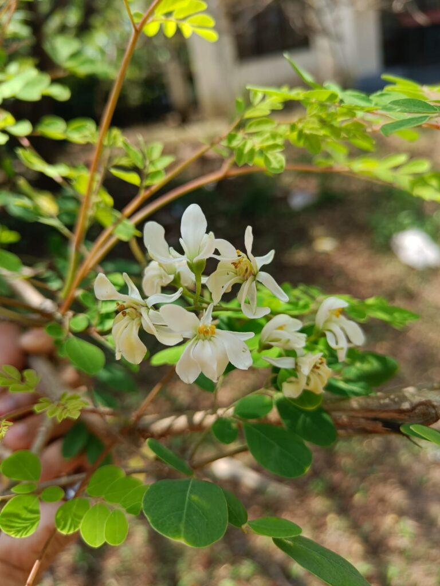

Basonym of Drug
Shigru
Main Synonym
- Shobhanjan
- Aksiv
- Mochak
- Tikshnagandhaka
- Bahuptra
Regional Name
- Bengali: Sajina
- Gujarati: Saragavo
- Hindi: Sahijana, Munaga, Saijana
- Kannada: Nugge
- Tamil: Morunge, Murinake
- Telugu: Munaga
- English: Drumstick Tree
Botanical Name
Moringa oleifera Gaertn
Types
- Sweta Shigru - Moringa oleifera Gaertn
- Rakta Shigru - Moringa concanensis Gaertn
Family
External Morphology
Small to medium tree
Useful Parts
- Fruit
- Leaves
- Flowers
- Root
- Seeds
Important Phytoconstituent
- Aspartic Acid
- Serine
- Indoleacetic Acid
- Carotene
- Kaempferol
- Quercetin
- Pterygospermine
Rasa Panchak
- Rasa: Katu, Tikta
- Guna: Laghu, Ruksha, Tikshna
- Virya: Ushna
- Vipaka: Katu
Action
Therapeutic Indication
- Deepan (Appetizer)
- Pachana (Digestive)
- Krimighna (Anti-helminthic)
- Shoolahara (Pain Reliever)
- Lekhna (Scrapping of Excessive Fat)
- Kandughna (Treat Itching)
- Chakshushya (Good for Eyes)
- Shukrala (Aphrodisiac)
Therapeutic Uses
- Kandu: Root bark powder is applied to the skin for itching.
- Vranasotha: Bark paste is applied externally to reduce inflammation in wounds.
- Sandhishoola: Boiled fruit and leaves paste is applied for arthritic pain and inflammation.
Dose
- Root Bark - 4-8 gm
- Root Juice - 10-20 ml
- Seeds - 1-3 gm
- Bark Decoction - 40-80 ml
Formulations
- Shigutwakadi Lepa
- Shigrupushpa Rasayana
- Aargvadhadi Kwath
Adverse Effect
Not Known
Remedial Measure
Contraindicated in pregnancy, menstruation, with pitta prakriti and diseases, abdominal disorders, and bleeding disorders